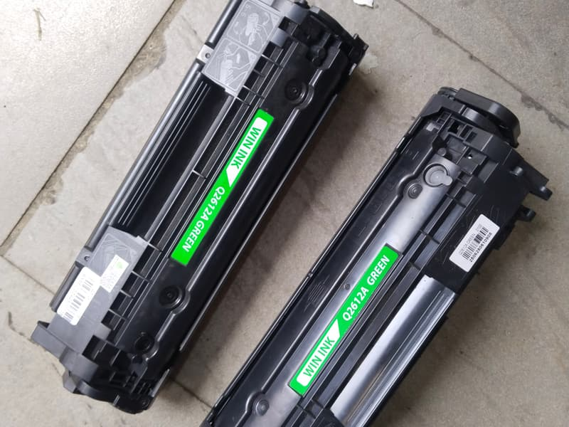
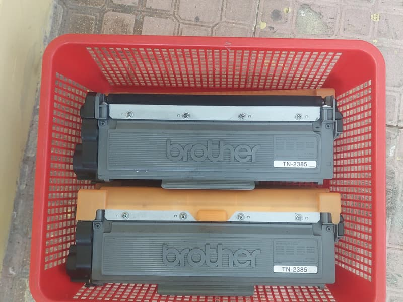
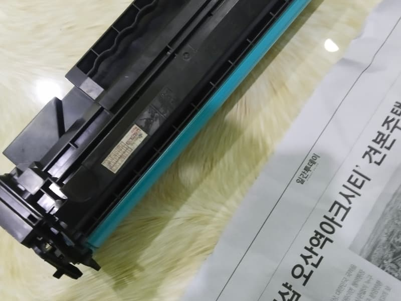
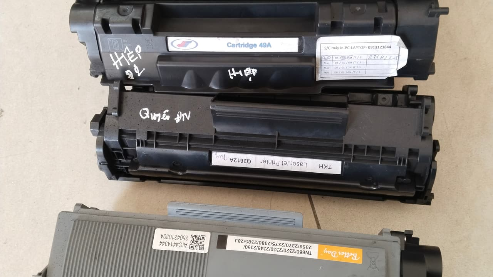

Bảng giá nạp mực máy in và linh kiện
Giá dưới đây đã gồm công đi lại trong khu Nam TP.HCM và vệ sinh buồng mực. Kỹ thuật xem máy rồi chốt lại tại chỗ — phát sinh linh kiện phải được anh/chị đồng ý trước.



Máy in laser trắng đen A4
| Loại máy / mã hộp mực | Giá | Ghi chú |
|---|---|---|
| HP — 12A, 35A, 85A, 49A, 05A, 80A | 80.000 – 100.000đ | Mực nhập khẩu, gồm vệ sinh buồng mực |
| HP 107a / 135w / 137fnw (hộp W1106A, có chip) | 100.000 – 150.000đ | Cộng chip nếu máy khoá, kỹ thuật mang sẵn |
| Canon — EP-26, 303, 325, 326, 329, 051 | 80.000 – 100.000đ | Dòng LBP2900 nạp rất bền |
| Brother — TN-1000, 2130, 2260, 2365, 2385 | 120.000đ | Reset cữ sau khi nạp |
| Samsung — MLT-D101S, D104S, D111S, D203 | 120.000đ | Gần như luôn phải thay chip |
| Fuji Xerox — CT201610, CT202877, CWAA0747 | 120.000đ | Kiểm tra hộp mực thải kèm theo |
| Panasonic — KX-FAT410, FAT411 | 140.000đ | Hộp khó tháo, công cao hơn |
| Ricoh, Lexmark, Dell A4 | 150.000 – 180.000đ | Tuỳ model |
Máy in laser A3 & máy đa năng
| Loại máy / mã hộp mực | Giá | Ghi chú |
|---|---|---|
| Máy in laser A3 (HP, Canon, Brother) | 250.000 – 350.000đ | Hộp mực dung tích lớn |
| Máy photocopy mini / đa năng A3 | 350.000 – 550.000đ | Chốt giá sau khi xem máy |
| Ricoh MP 2014 / 2501 (hộp 842135) | 350.000 – 450.000đ | ~12.000 trang mỗi lần nạp |
Máy phun mực hệ bình (Epson L-series, Canon G)
| Loại máy / mã hộp mực | Giá | Ghi chú |
|---|---|---|
| Bơm mực nước 4 màu — Epson L3110, L3210, L3250 | 150.000 – 200.000đ | Mực 003, gồm kiểm tra đầu phun |
| Thông đầu phun (nghẹt do để lâu không in) | Gọi báo giá | Tuỳ mức nghẹt. Kỹ thuật xem máy rồi báo, anh/chị đồng ý mới làm |
| Reset bộ đếm mực thải (maintenance box) | 100.000 – 150.000đ | Máy khoá không in thì phải reset |
| Ngâm đầu in qua đêm (khi thông đầu phun không hết) | Gọi báo giá | Giá thay đổi theo nguồn hàng nên báo qua điện thoại. Phải tháo đầu in mang về, mất một đêm; ngâm không ăn thì vẫn tính tiền dung dịch, kỹ thuật nói rõ mức đó trước khi nhận máy |
| Thay đầu in cũ — máy Epson 4 số (L1300, L1800, 1390) | Gọi báo giá | Giá đầu in thay đổi theo nguồn hàng và chênh rất xa giữa các model. Kỹ thuật luôn so với giá máy mới cùng dòng trước khi khuyên thay |
Linh kiện thay thế
| Loại máy / mã hộp mực | Giá | Ghi chú |
|---|---|---|
| Trống (drum) máy in A4 | 180.000 – 280.000đ | Thay khi có vệt đen dọc lặp chu kỳ |
| Trục từ | 120.000 – 180.000đ | Thay khi in mờ một bên |
| Gạt mực | 100.000 – 150.000đ | Thay khi lem mực dù vừa vệ sinh |
| Chip hộp mực | 80.000 – 150.000đ | HP đời mới, Samsung, Fuji Xerox |
| Bao lụa / lô sấy | 250.000 – 650.000đ | Khi bản in nhoè như bị ẩm |
| Bánh kéo giấy | 120.000 – 200.000đ | Khi máy không ăn giấy, kêu rè |
| Hộp mực mới nguyên bộ | 320.000 – 850.000đ | Khi vỏ hộp đã nạp quá 4–5 lần |

Điều cần biết về giá
- Giá đã gồm công đi lại trong địa bàn khu Nam và vệ sinh buồng mực — không phát sinh phí ẩn.
- Kỹ thuật xem máy, báo giá tại chỗ. Anh/chị đồng ý thì mới tháo máy.
- Máy sau khi nạp được in thử 5–10 trang để kiểm độ đậm, lem, kẹt giấy trước khi kỹ thuật rời đi.
- Cần báo giá trước bằng văn bản để trình kế toán thì nhắn Zalo danh sách máy, chúng tôi gửi lại.
- Máy đã bị người khác tháo sửa trước đó: kỹ thuật kiểm tra rồi mới nhận, để không bảo hành chồng lỗi cũ.
Giá có khác nhau theo quận không?
Không. Giá như nhau cho cả bảy quận huyện — chỉ thời gian tới là khác, do khoảng cách.
Giá trên đã gồm gì, và không gồm gì
Chỗ hay phát sinh tranh cãi trong nghề này không phải con số, mà là con số đó bao gồm những gì. Nên chúng tôi ghi rõ ra đây.
- Đã gồm: công đi lại trong cả bảy khu, tháo và vệ sinh buồng mực, hút sạch mực thải, lau trống và trục, lắp lại và in thử 5–10 trang trước khi rời đi.
- Đã gồm: bảo hành tính theo số trang in thực tế, có phiếu bảo hành.
- Chưa gồm: linh kiện phải thay như trống, trục từ, gạt mực, chip, bánh kéo giấy. Những khoản này kỹ thuật báo giá riêng tại chỗ và chỉ làm khi anh/chị đồng ý.
- Chưa gồm: hộp mực mới nguyên bộ, khi vỏ hộp cũ đã hết đời nạp.
- Không có và sẽ không có: phí kiểm tra, phí khảo sát, phí gọi gấp, phụ phí đi xa.
Vì sao cùng là laser A4 mà giá lại chênh nhau
Nhìn bảng trên sẽ thấy HP và Canon 80.000 – 100.000đ, Brother và Samsung 120.000đ, Panasonic 140.000đ. Chênh lệch không phải do hãng nào sang hơn, mà do ba thứ rất cụ thể.
- Công tháo lắp. Hộp Panasonic khó tháo hơn hẳn, mất thêm thời gian và dễ gãy ngàm nếu làm vội.
- Chip. HP đời mới, Samsung và Fuji Xerox khoá bằng chip nên gần như lần nạp nào cũng phải thay — tiền chip nằm trong giá.
- Thao tác phụ bắt buộc. Brother phải reset cữ sau khi nạp, Fuji Xerox phải kiểm và đổ hộp mực thải đi kèm. Bỏ qua thì nạp xong máy vẫn không chạy đúng.
Tự ước tính chi phí mực cho cả năm
Cách tính đơn giản mà chúng tôi vẫn chỉ cho khách công ty: lấy số trang in trung bình mỗi tháng chia cho số trang một lần nạp chịu được, ra số lần nạp mỗi tháng.
Một lần nạp hộp laser A4 phổ thông in được khoảng 1.500 – 2.000 trang. Vậy văn phòng in 1.000 trang mỗi tháng thì khoảng hai tháng nạp một lần, chi phí mực rơi vào 500.000 – 600.000đ cả năm. Cộng thêm trống và gạt thay mỗi 1–2 năm thì tổng khoảng 800.000đ đến 1 triệu cho một máy.
Con số đó đáng để so với chi phí thay hộp mực mới mỗi lần hết — 320.000 đến 850.000đ một hộp. Đây chính là lý do nạp mực vẫn tồn tại: cùng một lượng trang in, chi phí chênh nhau vài lần.
Câu hỏi thường gặp
Giá nạp mực máy in có khác nhau theo quận không?
Không. Giá như nhau cho cả bảy khu: Quận 8, 7, 6, 5, 4, Bình Chánh và Nhà Bè. Đi xa là việc của chúng tôi, không tính vào hoá đơn của anh/chị. Chỉ thời gian kỹ thuật tới là khác nhau, do khoảng cách thật.
Báo giá qua điện thoại có đúng với giá cuối cùng không?
Khung giá nói trong cuộc gọi là khung thật của dòng máy đó. Con số chốt lại tại chỗ sau khi kỹ thuật xem máy, và chỉ chênh nếu phát hiện linh kiện phải thay — trường hợp đó kỹ thuật báo giá trước và chờ anh/chị đồng ý mới làm.
Vì sao có chỗ báo nạp mực chỉ 50.000đ?
Mức đó thường là nạp kiểu khoan lỗ châm mực: không tháo hộp, không hút mực thải, không vệ sinh trống. Làm vậy nhanh và rẻ thật, nhưng khoang mực thải đầy dần rồi tràn, bản in lem và trống xước — vỏ hộp đáng lẽ nạp được 4–5 lần thì hỏng sau một hai lần.
Nạp mực và thay hộp mực mới, cái nào lợi hơn?
Nạp mực rẻ hơn nhiều lần cho cùng một lượng trang in, và vỏ hộp chịu được khoảng 4–5 lần nạp. Chỉ nên thay hộp mới khi vỏ đã nứt rò mực, hoặc nạp xong vẫn mờ từng mảng dù đã thay gạt và trống.
Công ty cần báo giá bằng văn bản trước, có gửi không?
Có. Anh/chị gửi danh sách máy qua Zalo, chúng tôi gửi lại báo giá bằng văn bản trước khi hẹn lịch để kế toán duyệt. Có xuất hoá đơn VAT.
Nạp mực máy in laser màu giá bao nhiêu?
Tính theo từng hộp màu chứ không một giá trọn máy, vì bốn hộp đen, xanh, hồng, vàng hiếm khi hết cùng lúc — anh/chị chỉ trả cho hộp thật sự cần nạp. Giá cụ thể phụ thuộc model và mã hộp, nên cách nhanh nhất là chụp nhãn hộp mực gửi Zalo, chúng tôi báo lại giá từng hộp trong vài phút.
Cần báo giá cho đúng máy của anh/chị?
Đọc dòng máy qua điện thoại hoặc chụp nhãn hộp mực gửi Zalo — chúng tôi báo con số cụ thể.